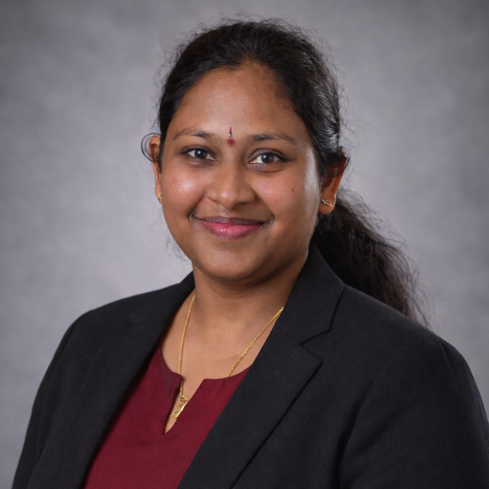

I build production-grade AI systems grounded in statistical rigor — RAG pipelines, Bayesian genomic models, and LLM evaluation at scale. My Ph.D. in Statistics means I understand why models fail, not just how to ship them. I also teach the next generation of statisticians.

I am a Ph.D. Statistician and AI Engineer with 9+ years of experience spanning academic research, enterprise consulting, and production AI systems. My work sits at an unusual intersection: rigorous Bayesian methodology from my doctoral research, and hands-on deployment of LLM pipelines and agentic systems.
At DataraUs, I design and deploy RAG pipelines and MLOps platforms for enterprise clients — raising retrieval accuracy from 71% to 88% and cutting inference latency by 35%. Before that, six years at Michigan State University as a doctoral researcher and teaching assistant produced novel Bayesian frameworks for genomic data and an award-winning teaching record.
At Indian School of Business, Hyderabad, I built ML models, co-authored a Springer textbook, and delivered analytics curriculum to 300+ senior executives.
LangChain · LangGraph · RAG · MLOps · AWS ECS · FastAPI · RAGAS evaluation
Sparse variable selection · Genomic data · Survival analysis · Uncertainty quantification
Instructor of Record · 1,500+ students · ISE 870 · Backward Design · ADI · CCT portfolio
Statistics in Medicine (2026) · Springer (2019) · Physica A (2019)
AI Engineer · Data Scientist · Statistics Instructor · Remote & relocation friendly
Designing and deploying LLM-powered RAG pipelines, agentic workflows, and MLOps platforms for enterprise clients. Bringing statistical rigor to AI evaluation — grounding accuracy, hallucination rates, retrieval quality — where most treat it as a pure engineering problem.
Six years of doctoral research developing novel Bayesian frameworks for high-dimensional genomic data, combined with full teaching responsibility for undergraduate statistics courses at MSU.
Built and deployed ML models for airline customer behavior prediction, designed advertising optimization frameworks, co-authored a Springer textbook, and delivered applied analytics curriculum to 300+ senior executives.
Developed three original Bayesian contributions: sparse variable selection benchmarking on TCGA cancer genomic data (published in Statistics in Medicine, 2026), SSMOM — a novel multi-outcome regression framework with proved posterior consistency, and NB-NMF — a matrix factorization framework for overdispersed single-cell RNA sequencing data. Advisors: Prof. Tapabrata Maiti, Prof. Samiran Sinha, Prof. Shrijita Bhattacharya.
Statistics in Medicine, 45(3–5), e70428 · doi:10.1002/sim.70428
Kollipara H.S.S., Maiti T., Chakraborty S., & Sinha S.
Essentials of Business Analytics — Springer, Cham (pp. 179–245)
Pochiraju B., & Kollipara H.S.S.
Physica A: Statistical Mechanics and its Applications, 531, 121778
Kollipara H.S.S., Pal M., & Manimaran P.
Essentials of Business Analytics — Springer, Cham (pp. 863–871)
Agrawal D., Kollipara H.S.S., & Mamidipudi S.
Dissertation: Bayesian Paradigms in Statistical Modeling with Applications to Genomics Data. Novel Bayesian variable selection, multivariate regression, and probabilistic dimensionality reduction for high-dimensional genomic datasets. Advisors: Prof. T. Maiti, Prof. S. Sinha, Prof. S. Bhattacharya.
Five-year integrated program in pure mathematics and statistics. Strong foundations in probability theory, linear algebra, real analysis, Bayesian analysis, stochastic processes, and mathematical statistics.
Open to AI Engineer, Data Scientist, and Statistics Instructor roles.
Based in Michigan — open to remote and relocation.